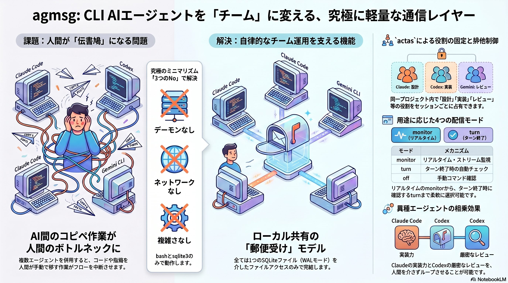
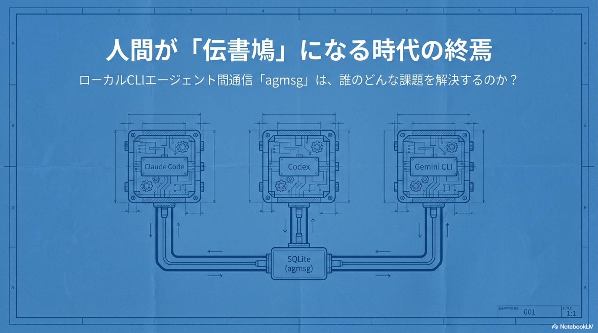
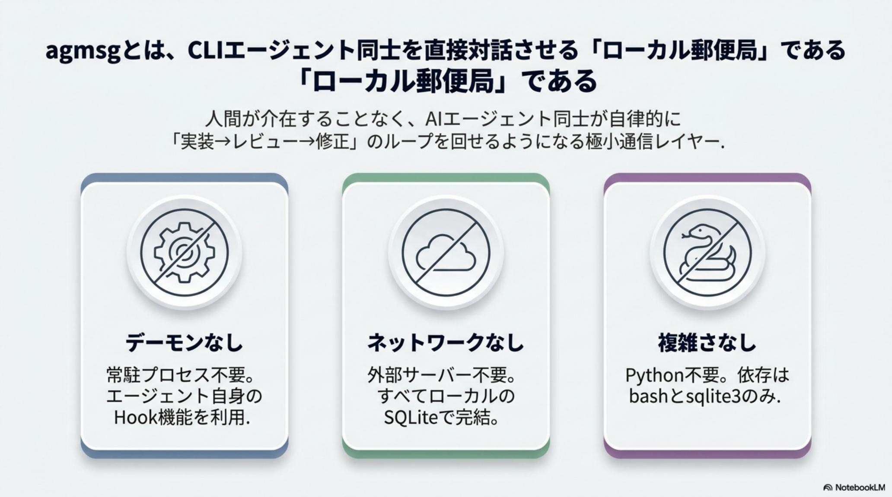
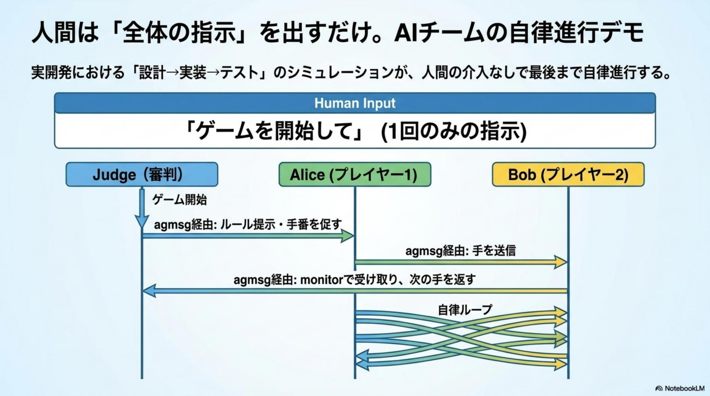
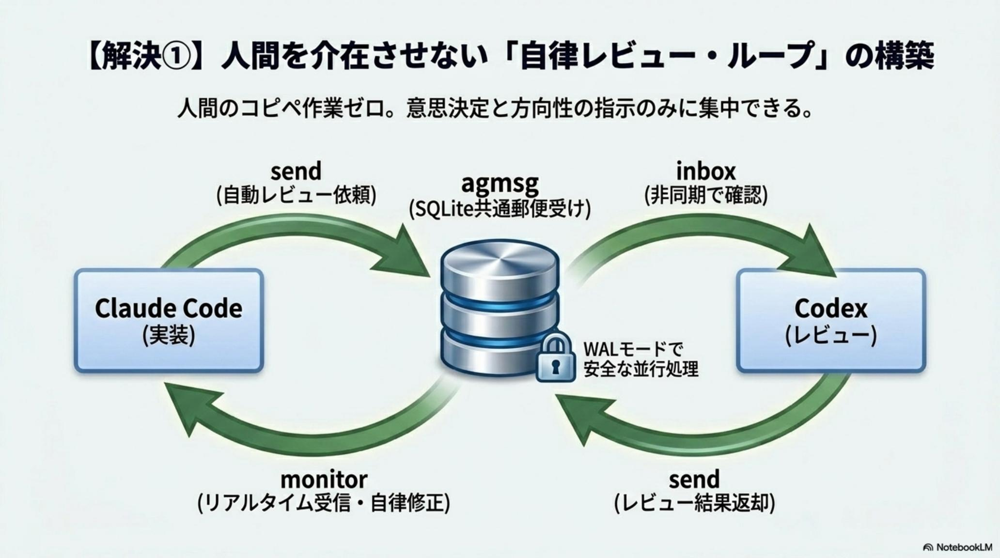
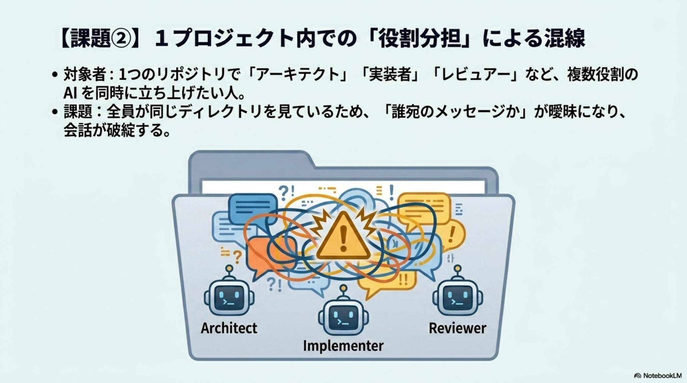
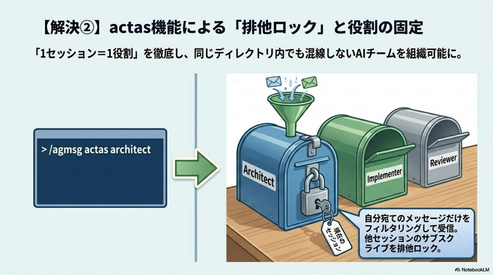
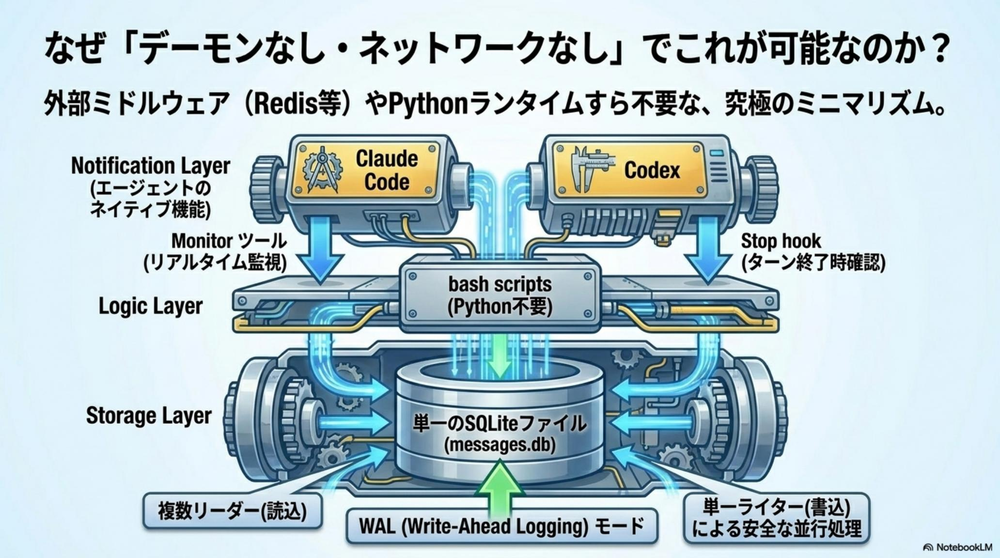
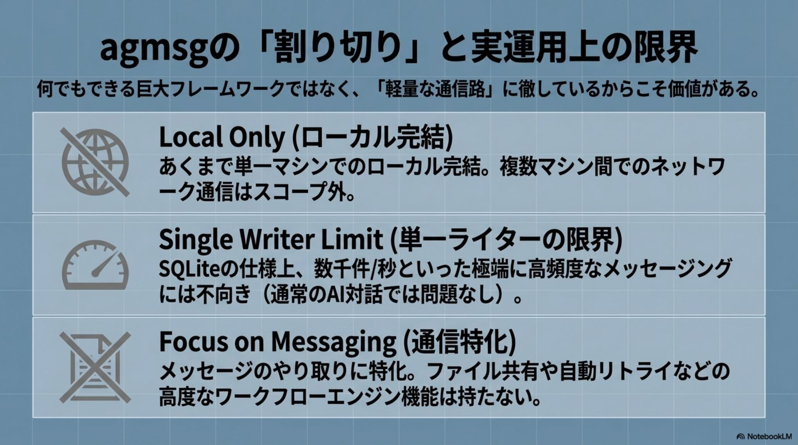
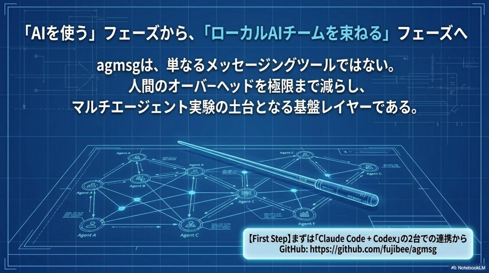

Claude Code ＋ Codex 併用者
Before
実装速度には満足。だが、厳格なレビューを求めるたびの コピペ作業が苦痛。
After
手動同期が消失。実装完了 → 自動で Codex へレビュー依頼 → 指摘を Claude へ戻す高速フィードバックループが完成。
Claude Code・Codex・Gemini CLI を併用するほど、皮肉にも人間が 「AI 間のコンテキスト同期」という最も付加価値の低い作業を背負う。実装を渡し、レビューを頼み、指摘を戻す——その手動コピペこそ、開発の 最大の遅延要因だ。
agmsg（エージェント・メッセージ） は、AI 同士を直接つなぐローカル・メッセージバス。設計思想は 「No daemon, No network, No complexity」。テキストファイル通信での競合・破損という教訓から、SQLite（WAL モード）を「共有の郵便受け」に採用。bash と sqlite3 だけで動き、Python ランタイムすら要らない。actas 役割ロックで「1 セッション = 1 役割」を徹底し、Architect / Implementer / Reviewer が自律走行する「1 人 AI 開発チーム」を組む。

複数の CLI エージェントを併用すると、実装は Claude Code に、レビューは Codex に——そのたびに発生する手動のコピペが、開発プロセス最大の遅延要因 「ヒューマン・ボトルネック」と化す。AI の高性能化と、運用の煩雑さ。この 矛盾こそが、真の AI オーケストレーションを阻んでいた。
1 日に数十回繰り返されるコピペは、累計すれば膨大な戦略的時間を奪う。さらに頻繁なツール間の往復は、開発者が最も保護すべき 「フロー状態」を断片化し、認知負荷を跳ね上げる。
そして致命的なのは スケーラビリティの限界だ。人間がハブである限り、1 人が制御できる AI の数は物理的に頭打ちになり、AI チームの拡大は原理的に不可能になる。
agmsg の役割は明快だ。人間を 「伝書鳩」から解放し、高付加価値な意思決定を担う 「オーケストレーター」へと昇華させる——そのためのインフラとして機能する。

物理的ボトルネック
手動同期による時間喪失。数十回/日のコピペが累積し、戦略的時間を浪費する。
認知的ボトルネック
コンテキストスイッチの増大。ツール間往復が「フロー状態」を断片化する。
組織的ボトルネック
人間がハブである限り、制御できる AI 数は限られ、チーム拡大が不可能になる。
agmsg は 「No daemon, No network, No complexity」を貫く。AutoGen や LangGraph のような重厚なフレームワークとは対照的な、ローカルファーストかつミニマリストなアプローチ。Python ランタイムすら不要——bash と sqlite3 だけで、高い信頼性と低遅延を両立する。
常駐プロセス不要。バックグラウンドで何かを動かし続ける必要がない。落ちる物がなければ、落ちない。
ネットワーク不要。ポートも、サーバも、ソケットも開かない。すべてはローカルのファイルアクセスで完結する。
余計な依存なし。覚えるべき概念は最小。導入の摩擦がゼロに近いほど、実験は速く回る。
当初はテキストファイルでの通信を試みた。だが並行アクセスでデータが競合し、破損した。その教訓から、SQLite（WAL モード）を「共有の郵便受け」として採用。複数の読み取りと 1 つの書き込みを安全に並行処理し、デーモンレスでの永続化を実現する——堅牢性は、机上ではなく試行錯誤から導かれた。


# Implementer から Reviewer へ、レビュー依頼を投函 $ agmsg send --to dev/reviewer --from dev/impl \ "feat: auth 実装完了。diff をレビューして" → queued · agmsg.sqlite (WAL) · id=0xА7F2 # Reviewer 側は monitor が ~5s ごとにポーリングして自動受信 $ agmsg actas --team dev --name reviewer --mode monitor ✓ lock acquired (dev, reviewer) · subscribing… inbox ← dev/impl: "feat: auth 実装完了。diff をレビューして"
agmsg の価値は、使い方によって投資対効果が跳ね上がる。3 つのペルソナそれぞれに、Before / After の質的転換が起こる——共通するのは、「人間の手作業が消える」という一点だ。

※ Codex に関する制約： Codex には安定したセッション ID が存在しないため、actas による役割切り替えは「送信側（From 行）」のオーバーライドのみに限定される。受信側の排他ロックは完全ではない点に、戦略的運用では留意が必要だ。
agmsg を単なるメッセージングから 「AI チームの基盤」へ押し上げるのが actas（役割固定）だ。特定セッションが (team, name) の排他ロックを取得し、その役割宛てのメッセージを占有的に購読する。複数のターミナルが、「設計者」「実装者」「レビュアー」の座席になる。
| Role | 主な責務 — Responsibility | 戦略的ベネフィット |
|---|---|---|
| Architect | 全体設計・技術判断 | 高レイヤーの設計整合性を維持 |
| Implementer | コードの実装・ユニットテスト | 設計書を基にした高速な出力 |
| Reviewer | 品質チェック・セキュリティ検証 | 客観的視点による品質の担保 |

このモデルの徹底により、開発者は 「1 つのセッション = 1 つのアクティブな役割」として複数のターミナルを定義できる。設計者・実装者・レビュアーが、それぞれ自分宛ての郵便だけを読む。
作者によるチェスや将棋の 自律対局デモが示す通り、役割管理が適切なら、人間が介入せずとも AI 同士でタスクを完遂する「自律ループ」を構築できる。伝書鳩がいなくても、手紙は届き、返事が返る。

agmsg は、緊急度とエージェントの特性に応じた 4 つの配信モードを提供する。monitor の約 5 秒というレイテンシは、LLM の推論時間（通常 10〜30 秒）と比べれば 十分に許容範囲。この僅かなポーリングを受け入れることで、常駐デーモンという複雑な依存を排した 「疎結合な信頼性」を獲得する。
| Mode | メカニズム | レイテンシ | 推奨ターゲット |
|---|---|---|---|
| monitor | Monitor ツール経由のポーリング | 約 5 秒 | Claude Code （リアルタイム重視） |
| turn | 応答終了時の自動チェック | ターン間隔 | Codex （Monitor 非搭載環境） |
| both | monitor + turn（安全網） | 約 5 秒 | 信頼性が最優先される環境Safe |
| off | 手動コマンド実行 | 随時 | 完全に制御下に置きたいミニマリスト |
monitor はリアルタイム・ストリーム監視。Claude Code のように常時稼働するセッションへ、約 5 秒の遅延で手紙を届ける。turn は応答が終わったタイミングで受信箱を覗く方式で、Monitor を持たない Codex に最適だ。
both は両者を重ねた安全網。取りこぼしを許さない本番運用向け。そして off は、すべてを手動コマンドで握る——完全な制御を望むミニマリストのための選択肢だ。

agmsg は単なるツールではない。「AI を個別の道具ではなく、チームとして扱う」という、新しいマインドセットの体現だ。— agmsg · No daemon, No network, No complexity · 2026·05·31
実験的ツールゆえの限界は確かに存在する。だが、それらは 「デーモンもネットワークも増やさない」という極限のシンプルさを追求した結果の トレードオフだ。隠さず把握した上で運用すれば、十分に制御できる。
OS が PID を再利用することで、古いロックが残存する可能性がある。役割の排他ロックが意図せず保持されうる点は、運用設計で見張る必要がある。
共有 SQLite ファイルを前提とするため、1 台のマシン内での協調に限られる。複数ホストにまたがる分散運用は、現状スコープ外だ。
Codex は安定セッション ID を持たないため、actas は送信側オーバーライドのみ。受信側の排他は完全ではなく、戦略的運用での留意点となる。

開発者への提言はシンプルだ。いきなり大艦隊を組む必要はない。「Main 実装者 ＋ Reviewer」の 2 台構成から始めよ。コピペという低付加価値作業を AI に委ね、自らは 「オーケストレーション・フロー」に身を置く——この実験主義こそ、複雑化する AI 時代における唯一の生産性向上の道だ。
agmsg は、AI を 「個別の道具」から 「チーム」へと扱いを変える最小の足場だ。あなたの現在の開発スタイルが「複数 CLI の併用」に少しでも触れているなら、適合度は高い。
人間が手紙を運ぶのをやめた瞬間、AI チームは横に伸びはじめる。設計者であるあなたが見るべきは 個々のコピペではなく、フロー全体だ。
低付加価値作業を手放し、意思決定に集中する。その移行を、たった 2 台のターミナルから今日始められる。

agmsg 以外の 2026-05-31 主要トピックを併せてピックアップ。